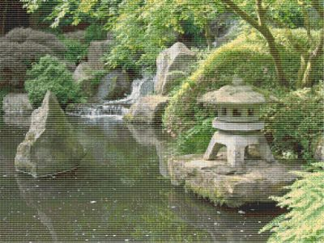

Everyone enjoys doing different things in their free time. Personally, I enjoy engrossing myself in stories or creating something beautiful or memorable. Specifically, I enjoy:
I really enjoy playing video games. Of course I appreciate them for the gameplay, but that's not all. The games that really stick with me are games that have been filled with complex, amazing stories and lovingly crafted to the finest of details. The Mass Effect series probably has some of the most engrossing and thought provoking storylines. The Legend of Zelda: Breath of the Wild and The Elder Scrolls: Skyrim are filled to the brim with detailed environments and tasks to complete. But the games that most envelop what I love about gaming are the Dark Souls series and Bloodborne, created by FromSoftware. The story and interactions are so engrossing and thought provoking, and to get the entire story, you have to look at the details that they have implanted into the environment. It is the ultimate example of interactive storytelling! For anybody interested in getting a better idea of what these games are all about, or looking for some help and insight into them, fextralife has some wonderfully put together wikis to go through.
Another form of media that I really enjoy partaking in is reading, particularly fantasy novels. Some of my all time favorites include J.R.R. Tolkien's The Lord of the Rings, J.K. Rowling's Harry Potter series And Garth Nix's Old Kingdom series. That being, anything well written I enjoy. I loved reading the biography on Abraham Lincoln, Team of Rivals by Doris Goodwin, and like reading about mythology and books based on mythology. However, my current interests lie in Brandon Sanderson's cosmere. Sanderson has constructed and entire universe, or cosmere as he calls it, of different worlds with there own magic system in each. So far the books, including Elantris, the Stormlight Archive, and the Mistborn series, have been seperate and distinct novels and series, but he is slowly bringing them together into one universal epic. I can't really do his grand scheme or his brilliant, New York Times bestselling books justice, so if this sounds interesting to you or you want to get a better idea of what I'm talking about, please visit his website.
Whenever I am doing something that requires my ears but not my hands, one of the things I like to do is counted cross-stitch. Counted cross-stitch is an image made on aida cloth, or cloth with small holes at regular intervals, using thread of various colors to make small X's and outline your X's based on a pattern. The end product will look something like the picture. Of course, you don't have to use a pattern, but I like to. I don't feel confident enough in my creative abilities, nor do I want to take the time to make my own patterns. I like doing this because it calms me and keeps my hands busy. I like to be doing something at all times, and this scratches that itch.
The other thing that I enjoy creating is models, but not just any models. These models, called Metal Earth Models, are made by taking stamped sheets of metal and, using the assembly instructions, putting them in place and bending tabs to make a small model. I first saw these at Comic Con in Salt Lake City and I've been slowly collecting them since. It's been wonderful because it requires very little skill and just a couple pairs of pliers. They have models from all sorts of franchises, including Star Wars, Marvel and Harry Potter as well as architecture, animals, instruments and much more. I would encourage you to take a look at what they have at their website by clicking on the picture of the completed model.